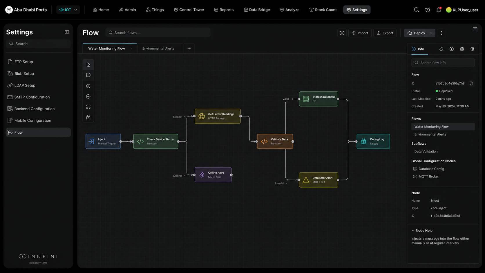
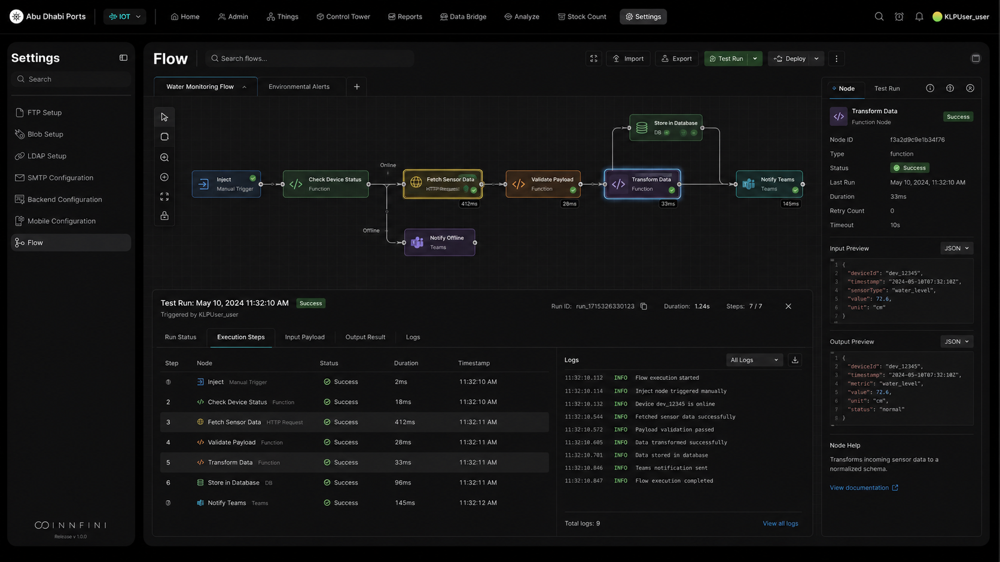
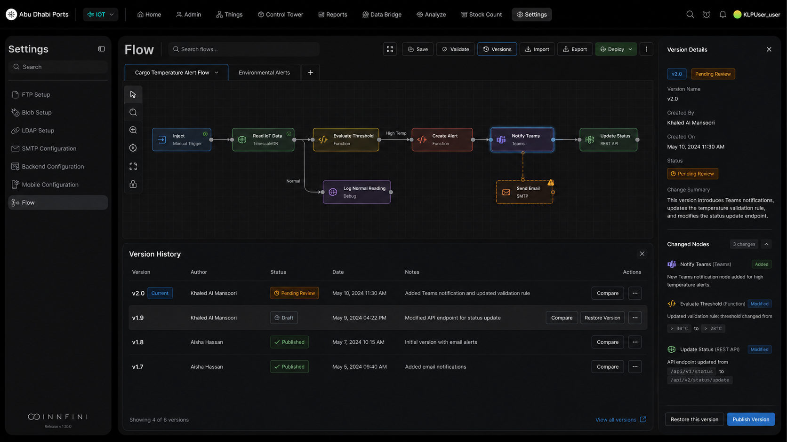

Compose operational automation visually — drag nodes for triggers, actions, conditions, integrations and data transformations onto the canvas, connect them, test the run, version it under governance, and deploy. No code. Same INNFINI structure, presented in a cleaner, modern, more user-friendly way.
No-code
Visual canvas
Test
Before deploy
Versioned
Audit-grade
DragConnectTestDeploy
workflow builder · drag & dropLive
// What's in the builder
A visual canvas. A real engine.
Every workflow you compose runs on the same INNFINI orchestration engine the platform itself uses — same identity model, same audit trail, same observability. No second tool to maintain.
01 · Nodes
Typed Node Library
Triggers, functions, HTTP, integrations, conditions, transformations, databases, alerts — drag any onto the canvas.
Manual · scheduled · event triggers
50+ integrations
Function + transform nodes
02 · Connect
Visual Connectors
Wire outputs to inputs. Branches, conditions and parallel paths render as clean directed edges on the canvas.
Auto-routed edges
Branch + parallel
Type-checked wires
03 · Test
Inline Test Run
Run any workflow with sample or live data. See each step succeed or fail, with input/output payloads and logs.
Step-by-step trace
Payload preview · JSON
Run logs · per node
04 · Govern
Version & Approve
Every change is a version. Compare, restore, approve and publish — with full author + timestamp history.
Author + date stamped
Compare · restore
Approval gates
Workflow Builder · canvas with typed nodes and a connected flow01 · Builder canvas

Workflow Builder Canvas. The main builder where users visually design automation flows using connected nodes. Each node represents an action, trigger, condition, integration or data transformation — allowing users to build complex operational logic without writing code. Tabs at the top organize multiple flows (Water Monitoring, Environmental Alerts). The right panel surfaces metadata for the selected flow — ID, status, last-modified, sub-flows, global configuration nodes — and details for any selected node. Same INNFINI structure as the original Node-RED-style canvas, presented in a cleaner, modern, more user-friendly way.
Workflow Builder · Test Run with execution steps, logs and payload preview02 · Test & monitor

Test Run & Execution Monitoring. Test the workflow before deploying. Users run the flow, see each step being executed, check whether each node succeeded or failed, review logs, inspect input + output payloads and identify issues quickly. The bottom panel ties it together: Run Status · Execution Steps · Input Payload · Output Result · Logs. The right panel shows the selected node's input/output JSON live — Transform Data succeeded in 33ms with the payload shown. This is how operators gain confidence before pushing changes live.
Workflow Builder · Version Control & Change Management03 · Versions & governance

Version Control & Change Management. INNFINI manages multiple versions of every workflow. Users compare versions, review what changed, see who made the update, restore a previous version, or publish a new version after approval. The Version History panel lists v2.0 (Pending Review), v1.9 (Draft), v1.8 / v1.7 (Published) with author, date, status badges and change notes. The right panel shows the change summary — Added "Notify Teams" node, modified "Evaluate Threshold" rule (>30°C → >28°C), and updated the status endpoint (/api/v1 → /api/v2). Critical for enterprise environments where every workflow change needs control, traceability and governance.
// Why Workflow Builder matters
From idea to production, governed.
01 · Speed
No-Code Build
Ops teams compose automation themselves — no eng tickets, no waiting on a sprint.
02 · Confidence
Test Before Deploy
Step-by-step execution trace with payloads and logs surfaces every issue before production.
03 · Governance
Versioned & Approved
Every change is a version. Diff, restore, approve and publish — full audit trail.
04 · Scale
One Engine
Same orchestration runtime the platform uses. No second tool. No new identity model.
Workflow Builder lets operators design, test and govern automation visually — drag-and-drop the nodes, test the flow with live data, version every change, and deploy under approval.
Build your own workflows visually.
A live walkthrough of the drag-and-drop canvas, test runs and versioned governance.